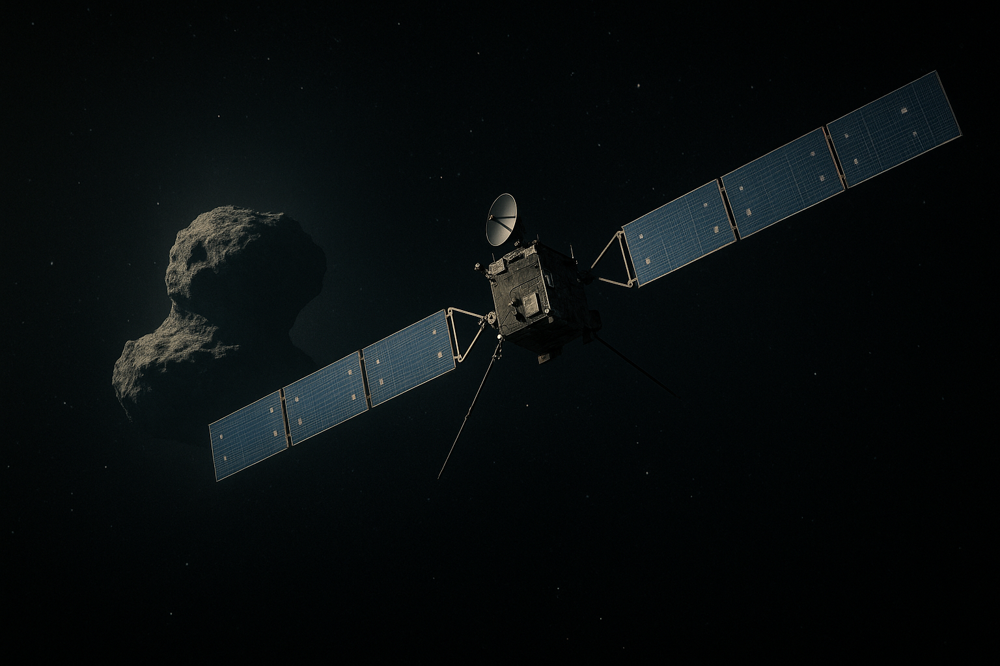

Rosetta
Agencia: ESA (Agencia Espacial Europea)
Fecha de lanzamiento: 2 de marzo de 2004
Duración de misión: 12 años (2004–2016)
Tipo de misión: Orbitador + módulo de aterrizaje (cometa)
Objetivo: Estudiar de cerca al cometa 67P/Churyumov–Gerasimenko y su evolución al acercarse al Sol
Carga científica: 21 instrumentos científicos entre la sonda y el módulo Philae: espectrómetros, sensores de polvo y gas, cámaras, magnetómetros, taladro, analizadores químicos y sensores térmicos
Impacto histórico
Rosetta fue la **primera sonda en orbitar un cometa** y desplegar un módulo de aterrizaje (Philae). La misión revolucionó nuestro conocimiento sobre la estructura, composición y comportamiento de los cometas. Aunque Philae tuvo dificultades tras aterrizar en sombra, logró transmitir datos históricos.
Rosetta demostró con precisión la complejidad de las operaciones en cuerpos pequeños y dejó un legado técnico y científico que influenciará futuras misiones a objetos primitivos del Sistema Solar.
⬅ Regresar al Manifiesto